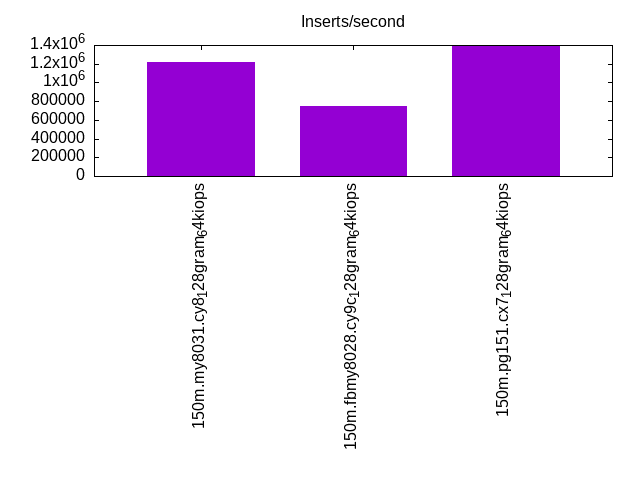
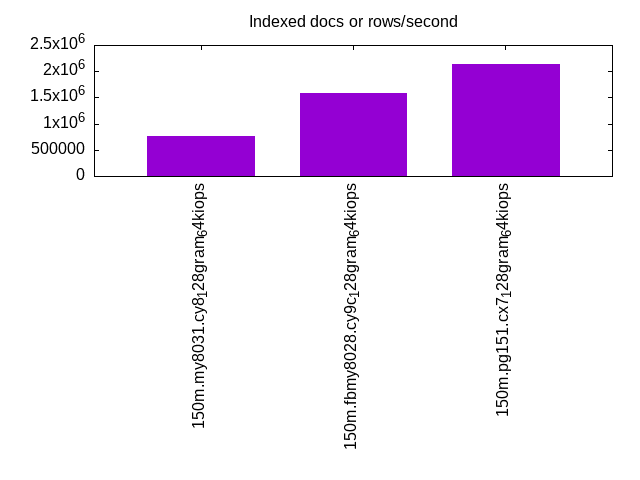
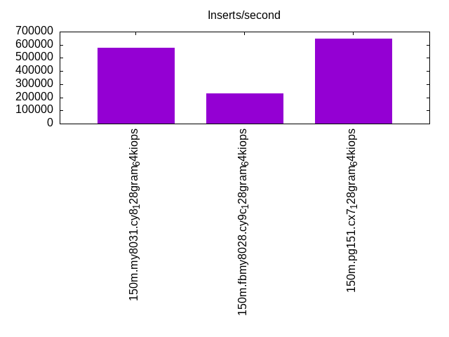
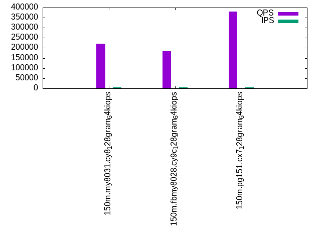
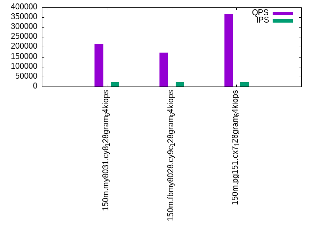
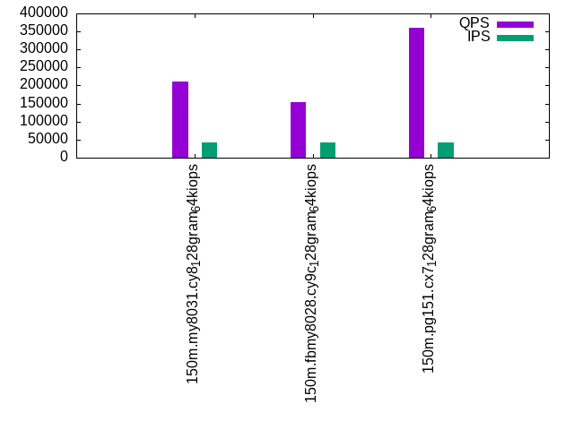

This is a report for the insert benchmark with 150M docs and 44 client(s). It is generated by scripts (bash, awk, sed) and Tufte might not be impressed. An overview of the insert benchmark is here and a short update is here. Below, by DBMS, I mean DBMS+version.config. An example is my8020.c10b40 where my means MySQL, 8020 is version 8.0.20 and c10b40 is the name for the configuration file.
The test server is an c6i.16xl with 32 cores, 64 HW threads (hyperthread enabled), 128G RAM and io2 storage (5T, 64K IOPs). The benchmark was run with 44 clients and there was 1 or 2 connections per client (1 for queries, 1 for inserts). The benchmark loads 100M rows without secondary indexes, creates secondary indexes, loads another 50M rows then does 3 read+write tests for one hour each that do queries as fast as possible with 100, 500 and then 1000 writes/second/client concurrent with the queries. The database is cached by the storage engine and the only IO is for writes. Clients and the DBMS share one server. The per-database configs are in the per-database subdirectories here.
The tested DBMS are:
The numbers are inserts/s for l.i0 and l.i1, indexed docs (or rows) /s for l.x and queries/s for q*.2. The values are the average rate over the entire test for inserts (IPS) and queries (QPS). The range of values for IPS and QPS is split into 3 parts: bottom 25%, middle 50%, top 25%. Values in the bottom 25% have a red background, values in the top 25% have a green background and values in the middle have no color. A gray background is used for values that can be ignored because the DBMS did not sustain the target insert rate. Red backgrounds are not used when the minimum value is within 80% of the max value.
| dbms | l.i0 | l.x | l.i1 | q100.1 | q500.1 | q1000.1 |
|---|---|---|---|---|---|---|
| 150m.my8031.cy8_128gram_64kiops | 1219274 | 766114 | 576141 | 220229 | 215457 | 210453 |
| 150m.fbmy8028.cy9c_128gram_64kiops | 748983 | 1590267 | 231986 | 183174 | 172590 | 154735 |
| 150m.pg151.cx7_128gram_64kiops | 1398101 | 2141992 | 647269 | 379577 | 368892 | 360321 |
This lists the average rate of inserts/s for the tests that do inserts concurrent with queries. For such tests the query rate is listed in the table above. The read+write tests are setup so that the insert rate should match the target rate every second. Cells that are not at least 95% of the target have a red background to indicate a failure to satisfy the target.
| dbms | q100.1 | q500.1 | q1000.1 |
|---|---|---|---|
| my8031.cy8_128gram_64kiops | 4343 | 21710 | 43433 |
| fbmy8028.cy9c_128gram_64kiops | 4343 | 21716 | 43445 |
| pg151.cx7_128gram_64kiops | 4343 | 21716 | 43373 |
| target | 4400 | 22000 | 44000 |
l.i0: load without secondary indexes. Graphs for performance per 1-second interval are here.
Average throughput:
Insert response time histogram: each cell has the percentage of responses that take <= the time in the header and max is the max response time in seconds. For the max column values in the top 25% of the range have a red background and in the bottom 25% of the range have a green background. The red background is not used when the min value is within 80% of the max value.
| dbms | 256us | 1ms | 4ms | 16ms | 64ms | 256ms | 1s | 4s | 16s | gt | max |
|---|---|---|---|---|---|---|---|---|---|---|---|
| my8031.cy8_128gram_64kiops | 11.756 | 87.868 | 0.275 | 0.051 | 0.050 | 0.106 | |||||
| fbmy8028.cy9c_128gram_64kiops | 1.637 | 58.307 | 39.938 | 0.107 | 0.012 | 0.102 | |||||
| pg151.cx7_128gram_64kiops | 53.405 | 46.538 | 0.021 | 0.037 | 0.041 |
Performance metrics for the DBMS listed above. Some are normalized by throughput, others are not. Legend for results is here.
ips qps rps rmbps wps wmbps rpq rkbpq wpi wkbpi csps cpups cspq cpupq dbgb1 dbgb2 rss maxop p50 p99 tag 1219274 0 0 0.0 1862.8 317.2 0.000 0.000 0.002 0.266 189589 41.0 0.155 22 7.2 135.8 14.6 0.106 89284 19379 150m.my8031.cy8_128gram_64kiops 748983 0 0 0.0 1087.0 246.6 0.000 0.000 0.001 0.337 591973 47.2 0.790 40 4.2 4.8 1.8 0.102 66044 29469 150m.fbmy8028.cy9c_128gram_64kiops 1398101 0 0 0.0 2420.0 561.7 0.000 0.000 0.002 0.411 165565 36.8 0.118 17 10.0 27.1 9.0 0.041 139349 60835 150m.pg151.cx7_128gram_64kiops
l.x: create secondary indexes.
Average throughput:
Performance metrics for the DBMS listed above. Some are normalized by throughput, others are not. Legend for results is here.
ips qps rps rmbps wps wmbps rpq rkbpq wpi wkbpi csps cpups cspq cpupq dbgb1 dbgb2 rss maxop p50 p99 tag 766114 0 4549 280.0 15038.3 670.7 0.006 0.374 0.020 0.896 180068 21.7 0.235 18 15.6 144.2 17.5 0.005 NA NA 150m.my8031.cy8_128gram_64kiops 1590267 0 9 0.3 1731.2 389.4 0.000 0.000 0.001 0.251 11959 26.1 0.008 11 7.3 7.8 9.5 0.006 NA NA 150m.fbmy8028.cy9c_128gram_64kiops 2141992 0 0 0.0 2352.1 568.3 0.000 0.000 0.001 0.272 22141 10.5 0.010 3 19.3 44.8 0.0 0.019 NA NA 150m.pg151.cx7_128gram_64kiops
l.i1: continue load after secondary indexes created. Graphs for performance per 1-second interval are here.
Average throughput:
Insert response time histogram: each cell has the percentage of responses that take <= the time in the header and max is the max response time in seconds. For the max column values in the top 25% of the range have a red background and in the bottom 25% of the range have a green background. The red background is not used when the min value is within 80% of the max value.
| dbms | 256us | 1ms | 4ms | 16ms | 64ms | 256ms | 1s | 4s | 16s | gt | max |
|---|---|---|---|---|---|---|---|---|---|---|---|
| my8031.cy8_128gram_64kiops | 0.056 | 98.632 | 0.928 | 0.223 | 0.161 | nonzero | 0.267 | ||||
| fbmy8028.cy9c_128gram_64kiops | 0.240 | 9.060 | 90.627 | 0.073 | nonzero | 0.065 | |||||
| pg151.cx7_128gram_64kiops | 7.326 | 91.830 | 0.376 | 0.467 | 0.057 |
Performance metrics for the DBMS listed above. Some are normalized by throughput, others are not. Legend for results is here.
ips qps rps rmbps wps wmbps rpq rkbpq wpi wkbpi csps cpups cspq cpupq dbgb1 dbgb2 rss maxop p50 p99 tag 576141 0 5241 81.9 3503.5 441.5 0.009 0.146 0.006 0.785 212819 42.6 0.369 47 27.8 156.4 32.8 0.267 26571 200 150m.my8031.cy8_128gram_64kiops 231986 0 110 13.5 1067.4 245.7 0.000 0.060 0.005 1.085 101751 21.3 0.439 59 19.1 20.4 11.1 0.065 5644 1299 150m.fbmy8028.cy9c_128gram_64kiops 647269 0 0 0.0 3205.2 756.0 0.000 0.000 0.005 1.196 355659 37.1 0.549 37 33.6 82.3 0.0 0.057 38991 13539 150m.pg151.cx7_128gram_64kiops
q100.1: range queries with 100 insert/s per client. Graphs for performance per 1-second interval are here.
Average throughput:
Query response time histogram: each cell has the percentage of responses that take <= the time in the header and max is the max response time in seconds. For max values in the top 25% of the range have a red background and in the bottom 25% of the range have a green background. The red background is not used when the min value is within 80% of the max value.
| dbms | 256us | 1ms | 4ms | 16ms | 64ms | 256ms | 1s | 4s | 16s | gt | max |
|---|---|---|---|---|---|---|---|---|---|---|---|
| my8031.cy8_128gram_64kiops | 94.590 | 5.402 | 0.008 | nonzero | nonzero | 0.023 | |||||
| fbmy8028.cy9c_128gram_64kiops | 87.744 | 12.245 | 0.011 | nonzero | nonzero | nonzero | 0.124 | ||||
| pg151.cx7_128gram_64kiops | 99.937 | 0.059 | 0.004 | nonzero | nonzero | 0.022 |
Insert response time histogram: each cell has the percentage of responses that take <= the time in the header and max is the max response time in seconds. For max values in the top 25% of the range have a red background and in the bottom 25% of the range have a green background. The red background is not used when the min value is within 80% of the max value.
| dbms | 256us | 1ms | 4ms | 16ms | 64ms | 256ms | 1s | 4s | 16s | gt | max |
|---|---|---|---|---|---|---|---|---|---|---|---|
| my8031.cy8_128gram_64kiops | 98.962 | 1.038 | 0.013 | ||||||||
| fbmy8028.cy9c_128gram_64kiops | 0.064 | 97.648 | 2.288 | 0.013 | |||||||
| pg151.cx7_128gram_64kiops | nonzero | 93.253 | 5.787 | 0.959 | 0.001 | 0.072 |
Performance metrics for the DBMS listed above. Some are normalized by throughput, others are not. Legend for results is here.
ips qps rps rmbps wps wmbps rpq rkbpq wpi wkbpi csps cpups cspq cpupq dbgb1 dbgb2 rss maxop p50 p99 tag 4343 220229 0 0.0 411.9 12.8 0.000 0.000 0.095 3.018 830900 65.2 3.773 189 28.9 157.5 33.8 0.023 5066 5003 150m.my8031.cy8_128gram_64kiops 4343 183174 32 0.3 56.6 12.8 0.000 0.001 0.013 3.013 696301 66.3 3.801 232 12.2 13.6 45.6 0.124 4219 3885 150m.fbmy8028.cy9c_128gram_64kiops 4343 379577 0 0.0 1906.2 85.1 0.000 0.000 0.439 20.054 1414295 62.9 3.726 106 35.1 85.5 23.0 0.022 8679 8551 150m.pg151.cx7_128gram_64kiops
q500.1: range queries with 500 insert/s per client. Graphs for performance per 1-second interval are here.
Average throughput:
Query response time histogram: each cell has the percentage of responses that take <= the time in the header and max is the max response time in seconds. For max values in the top 25% of the range have a red background and in the bottom 25% of the range have a green background. The red background is not used when the min value is within 80% of the max value.
| dbms | 256us | 1ms | 4ms | 16ms | 64ms | 256ms | 1s | 4s | 16s | gt | max |
|---|---|---|---|---|---|---|---|---|---|---|---|
| my8031.cy8_128gram_64kiops | 93.886 | 6.072 | 0.039 | 0.002 | nonzero | 0.024 | |||||
| fbmy8028.cy9c_128gram_64kiops | 77.648 | 22.301 | 0.050 | 0.001 | nonzero | 0.039 | |||||
| pg151.cx7_128gram_64kiops | 99.761 | 0.215 | 0.022 | 0.002 | nonzero | 0.025 |
Insert response time histogram: each cell has the percentage of responses that take <= the time in the header and max is the max response time in seconds. For max values in the top 25% of the range have a red background and in the bottom 25% of the range have a green background. The red background is not used when the min value is within 80% of the max value.
| dbms | 256us | 1ms | 4ms | 16ms | 64ms | 256ms | 1s | 4s | 16s | gt | max |
|---|---|---|---|---|---|---|---|---|---|---|---|
| my8031.cy8_128gram_64kiops | 80.167 | 19.810 | 0.023 | 0.030 | |||||||
| fbmy8028.cy9c_128gram_64kiops | 0.004 | 5.233 | 93.119 | 1.644 | 0.041 | ||||||
| pg151.cx7_128gram_64kiops | 58.895 | 33.388 | 7.680 | 0.038 | 0.101 |
Performance metrics for the DBMS listed above. Some are normalized by throughput, others are not. Legend for results is here.
ips qps rps rmbps wps wmbps rpq rkbpq wpi wkbpi csps cpups cspq cpupq dbgb1 dbgb2 rss maxop p50 p99 tag 21710 215457 0 0.0 1006.7 42.1 0.000 0.000 0.046 1.987 814633 66.5 3.781 198 51.4 180.0 53.9 0.024 4971 4877 150m.my8031.cy8_128gram_64kiops 21716 172590 0 0.0 195.9 45.7 0.000 0.000 0.009 2.154 659890 68.1 3.823 253 17.8 19.8 82.6 0.039 3996 3676 150m.fbmy8028.cy9c_128gram_64kiops 21716 368892 0 0.0 1411.7 146.9 0.000 0.000 0.065 6.929 1379571 64.0 3.740 111 58.1 102.8 0.0 0.025 8439 8103 150m.pg151.cx7_128gram_64kiops
q1000.1: range queries with 1000 insert/s per client. Graphs for performance per 1-second interval are here.
Average throughput:
Query response time histogram: each cell has the percentage of responses that take <= the time in the header and max is the max response time in seconds. For max values in the top 25% of the range have a red background and in the bottom 25% of the range have a green background. The red background is not used when the min value is within 80% of the max value.
| dbms | 256us | 1ms | 4ms | 16ms | 64ms | 256ms | 1s | 4s | 16s | gt | max |
|---|---|---|---|---|---|---|---|---|---|---|---|
| my8031.cy8_128gram_64kiops | 93.128 | 6.818 | 0.052 | 0.002 | nonzero | 0.026 | |||||
| fbmy8028.cy9c_128gram_64kiops | 47.274 | 52.617 | 0.107 | 0.002 | nonzero | nonzero | 0.064 | ||||
| pg151.cx7_128gram_64kiops | 99.649 | 0.303 | 0.036 | 0.009 | 0.003 | nonzero | nonzero | 0.428 |
Insert response time histogram: each cell has the percentage of responses that take <= the time in the header and max is the max response time in seconds. For max values in the top 25% of the range have a red background and in the bottom 25% of the range have a green background. The red background is not used when the min value is within 80% of the max value.
| dbms | 256us | 1ms | 4ms | 16ms | 64ms | 256ms | 1s | 4s | 16s | gt | max |
|---|---|---|---|---|---|---|---|---|---|---|---|
| my8031.cy8_128gram_64kiops | 84.231 | 15.706 | 0.063 | 0.044 | |||||||
| fbmy8028.cy9c_128gram_64kiops | 0.008 | 12.817 | 84.603 | 2.573 | 0.059 | ||||||
| pg151.cx7_128gram_64kiops | 0.010 | 70.840 | 21.838 | 6.609 | 0.700 | 0.003 | 0.526 |
Performance metrics for the DBMS listed above. Some are normalized by throughput, others are not. Legend for results is here.
ips qps rps rmbps wps wmbps rpq rkbpq wpi wkbpi csps cpups cspq cpupq dbgb1 dbgb2 rss maxop p50 p99 tag 43433 210453 0 0.0 1810.7 71.6 0.000 0.000 0.042 1.688 794004 67.6 3.773 206 76.5 205.1 77.0 0.026 4827 4731 150m.my8031.cy8_128gram_64kiops 43445 154735 0 0.0 386.0 87.5 0.000 0.000 0.009 2.062 594546 70.6 3.842 292 29.3 30.5 83.4 0.064 3580 3165 150m.fbmy8028.cy9c_128gram_64kiops 43373 360321 2 0.0 2152.1 258.5 0.000 0.000 0.050 6.104 1347131 64.5 3.739 115 80.4 157.3 0.0 0.428 8231 6201 150m.pg151.cx7_128gram_64kiops
l.i0: load without secondary indexes
Performance metrics for all DBMS, not just the ones listed above. Some are normalized by throughput, others are not. Legend for results is here.
ips qps rps rmbps wps wmbps rpq rkbpq wpi wkbpi csps cpups cspq cpupq dbgb1 dbgb2 rss maxop p50 p99 tag 1219274 0 0 0.0 1862.8 317.2 0.000 0.000 0.002 0.266 189589 41.0 0.155 22 7.2 135.8 14.6 0.106 89284 19379 150m.my8031.cy8_128gram_64kiops 748983 0 0 0.0 1087.0 246.6 0.000 0.000 0.001 0.337 591973 47.2 0.790 40 4.2 4.8 1.8 0.102 66044 29469 150m.fbmy8028.cy9c_128gram_64kiops 1398101 0 0 0.0 2420.0 561.7 0.000 0.000 0.002 0.411 165565 36.8 0.118 17 10.0 27.1 9.0 0.041 139349 60835 150m.pg151.cx7_128gram_64kiops
l.x: create secondary indexes
Performance metrics for all DBMS, not just the ones listed above. Some are normalized by throughput, others are not. Legend for results is here.
ips qps rps rmbps wps wmbps rpq rkbpq wpi wkbpi csps cpups cspq cpupq dbgb1 dbgb2 rss maxop p50 p99 tag 766114 0 4549 280.0 15038.3 670.7 0.006 0.374 0.020 0.896 180068 21.7 0.235 18 15.6 144.2 17.5 0.005 NA NA 150m.my8031.cy8_128gram_64kiops 1590267 0 9 0.3 1731.2 389.4 0.000 0.000 0.001 0.251 11959 26.1 0.008 11 7.3 7.8 9.5 0.006 NA NA 150m.fbmy8028.cy9c_128gram_64kiops 2141992 0 0 0.0 2352.1 568.3 0.000 0.000 0.001 0.272 22141 10.5 0.010 3 19.3 44.8 0.0 0.019 NA NA 150m.pg151.cx7_128gram_64kiops
l.i1: continue load after secondary indexes created
Performance metrics for all DBMS, not just the ones listed above. Some are normalized by throughput, others are not. Legend for results is here.
ips qps rps rmbps wps wmbps rpq rkbpq wpi wkbpi csps cpups cspq cpupq dbgb1 dbgb2 rss maxop p50 p99 tag 576141 0 5241 81.9 3503.5 441.5 0.009 0.146 0.006 0.785 212819 42.6 0.369 47 27.8 156.4 32.8 0.267 26571 200 150m.my8031.cy8_128gram_64kiops 231986 0 110 13.5 1067.4 245.7 0.000 0.060 0.005 1.085 101751 21.3 0.439 59 19.1 20.4 11.1 0.065 5644 1299 150m.fbmy8028.cy9c_128gram_64kiops 647269 0 0 0.0 3205.2 756.0 0.000 0.000 0.005 1.196 355659 37.1 0.549 37 33.6 82.3 0.0 0.057 38991 13539 150m.pg151.cx7_128gram_64kiops
q100.1: range queries with 100 insert/s per client
Performance metrics for all DBMS, not just the ones listed above. Some are normalized by throughput, others are not. Legend for results is here.
ips qps rps rmbps wps wmbps rpq rkbpq wpi wkbpi csps cpups cspq cpupq dbgb1 dbgb2 rss maxop p50 p99 tag 4343 220229 0 0.0 411.9 12.8 0.000 0.000 0.095 3.018 830900 65.2 3.773 189 28.9 157.5 33.8 0.023 5066 5003 150m.my8031.cy8_128gram_64kiops 4343 183174 32 0.3 56.6 12.8 0.000 0.001 0.013 3.013 696301 66.3 3.801 232 12.2 13.6 45.6 0.124 4219 3885 150m.fbmy8028.cy9c_128gram_64kiops 4343 379577 0 0.0 1906.2 85.1 0.000 0.000 0.439 20.054 1414295 62.9 3.726 106 35.1 85.5 23.0 0.022 8679 8551 150m.pg151.cx7_128gram_64kiops
q500.1: range queries with 500 insert/s per client
Performance metrics for all DBMS, not just the ones listed above. Some are normalized by throughput, others are not. Legend for results is here.
ips qps rps rmbps wps wmbps rpq rkbpq wpi wkbpi csps cpups cspq cpupq dbgb1 dbgb2 rss maxop p50 p99 tag 21710 215457 0 0.0 1006.7 42.1 0.000 0.000 0.046 1.987 814633 66.5 3.781 198 51.4 180.0 53.9 0.024 4971 4877 150m.my8031.cy8_128gram_64kiops 21716 172590 0 0.0 195.9 45.7 0.000 0.000 0.009 2.154 659890 68.1 3.823 253 17.8 19.8 82.6 0.039 3996 3676 150m.fbmy8028.cy9c_128gram_64kiops 21716 368892 0 0.0 1411.7 146.9 0.000 0.000 0.065 6.929 1379571 64.0 3.740 111 58.1 102.8 0.0 0.025 8439 8103 150m.pg151.cx7_128gram_64kiops
q1000.1: range queries with 1000 insert/s per client
Performance metrics for all DBMS, not just the ones listed above. Some are normalized by throughput, others are not. Legend for results is here.
ips qps rps rmbps wps wmbps rpq rkbpq wpi wkbpi csps cpups cspq cpupq dbgb1 dbgb2 rss maxop p50 p99 tag 43433 210453 0 0.0 1810.7 71.6 0.000 0.000 0.042 1.688 794004 67.6 3.773 206 76.5 205.1 77.0 0.026 4827 4731 150m.my8031.cy8_128gram_64kiops 43445 154735 0 0.0 386.0 87.5 0.000 0.000 0.009 2.062 594546 70.6 3.842 292 29.3 30.5 83.4 0.064 3580 3165 150m.fbmy8028.cy9c_128gram_64kiops 43373 360321 2 0.0 2152.1 258.5 0.000 0.000 0.050 6.104 1347131 64.5 3.739 115 80.4 157.3 0.0 0.428 8231 6201 150m.pg151.cx7_128gram_64kiops
Insert response time histogram
256us 1ms 4ms 16ms 64ms 256ms 1s 4s 16s gt max tag 0.000 11.756 87.868 0.275 0.051 0.050 0.000 0.000 0.000 0.000 0.106 my8031.cy8_128gram_64kiops 0.000 1.637 58.307 39.938 0.107 0.012 0.000 0.000 0.000 0.000 0.102 fbmy8028.cy9c_128gram_64kiops 0.000 53.405 46.538 0.021 0.037 0.000 0.000 0.000 0.000 0.000 0.041 pg151.cx7_128gram_64kiops
TODO - determine whether there is data for create index response time
Insert response time histogram
256us 1ms 4ms 16ms 64ms 256ms 1s 4s 16s gt max tag 0.000 0.056 98.632 0.928 0.223 0.161 nonzero 0.000 0.000 0.000 0.267 my8031.cy8_128gram_64kiops 0.000 0.240 9.060 90.627 0.073 nonzero 0.000 0.000 0.000 0.000 0.065 fbmy8028.cy9c_128gram_64kiops 0.000 7.326 91.830 0.376 0.467 0.000 0.000 0.000 0.000 0.000 0.057 pg151.cx7_128gram_64kiops
Query response time histogram
256us 1ms 4ms 16ms 64ms 256ms 1s 4s 16s gt max tag 94.590 5.402 0.008 nonzero nonzero 0.000 0.000 0.000 0.000 0.000 0.023 my8031.cy8_128gram_64kiops 87.744 12.245 0.011 nonzero nonzero nonzero 0.000 0.000 0.000 0.000 0.124 fbmy8028.cy9c_128gram_64kiops 99.937 0.059 0.004 nonzero nonzero 0.000 0.000 0.000 0.000 0.000 0.022 pg151.cx7_128gram_64kiops
Insert response time histogram
256us 1ms 4ms 16ms 64ms 256ms 1s 4s 16s gt max tag 0.000 0.000 98.962 1.038 0.000 0.000 0.000 0.000 0.000 0.000 0.013 my8031.cy8_128gram_64kiops 0.000 0.064 97.648 2.288 0.000 0.000 0.000 0.000 0.000 0.000 0.013 fbmy8028.cy9c_128gram_64kiops 0.000 nonzero 93.253 5.787 0.959 0.001 0.000 0.000 0.000 0.000 0.072 pg151.cx7_128gram_64kiops
Query response time histogram
256us 1ms 4ms 16ms 64ms 256ms 1s 4s 16s gt max tag 93.886 6.072 0.039 0.002 nonzero 0.000 0.000 0.000 0.000 0.000 0.024 my8031.cy8_128gram_64kiops 77.648 22.301 0.050 0.001 nonzero 0.000 0.000 0.000 0.000 0.000 0.039 fbmy8028.cy9c_128gram_64kiops 99.761 0.215 0.022 0.002 nonzero 0.000 0.000 0.000 0.000 0.000 0.025 pg151.cx7_128gram_64kiops
Insert response time histogram
256us 1ms 4ms 16ms 64ms 256ms 1s 4s 16s gt max tag 0.000 0.000 80.167 19.810 0.023 0.000 0.000 0.000 0.000 0.000 0.030 my8031.cy8_128gram_64kiops 0.000 0.004 5.233 93.119 1.644 0.000 0.000 0.000 0.000 0.000 0.041 fbmy8028.cy9c_128gram_64kiops 0.000 0.000 58.895 33.388 7.680 0.038 0.000 0.000 0.000 0.000 0.101 pg151.cx7_128gram_64kiops
Query response time histogram
256us 1ms 4ms 16ms 64ms 256ms 1s 4s 16s gt max tag 93.128 6.818 0.052 0.002 nonzero 0.000 0.000 0.000 0.000 0.000 0.026 my8031.cy8_128gram_64kiops 47.274 52.617 0.107 0.002 nonzero nonzero 0.000 0.000 0.000 0.000 0.064 fbmy8028.cy9c_128gram_64kiops 99.649 0.303 0.036 0.009 0.003 nonzero nonzero 0.000 0.000 0.000 0.428 pg151.cx7_128gram_64kiops
Insert response time histogram
256us 1ms 4ms 16ms 64ms 256ms 1s 4s 16s gt max tag 0.000 0.000 84.231 15.706 0.063 0.000 0.000 0.000 0.000 0.000 0.044 my8031.cy8_128gram_64kiops 0.000 0.008 12.817 84.603 2.573 0.000 0.000 0.000 0.000 0.000 0.059 fbmy8028.cy9c_128gram_64kiops 0.000 0.010 70.840 21.838 6.609 0.700 0.003 0.000 0.000 0.000 0.526 pg151.cx7_128gram_64kiops